Viewing the Unviewable
Steven Wittens
 unconed
unconed
http:// acko.net
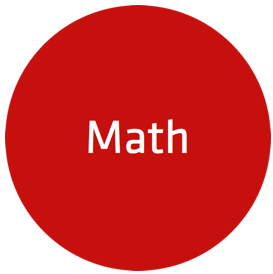
Video Games = Applied Experimental Math
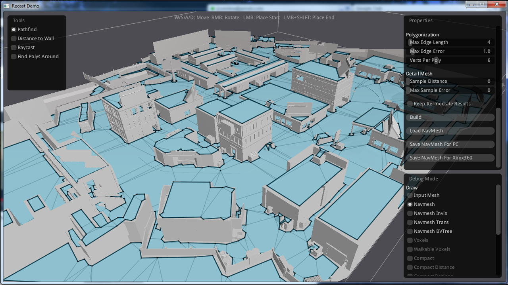
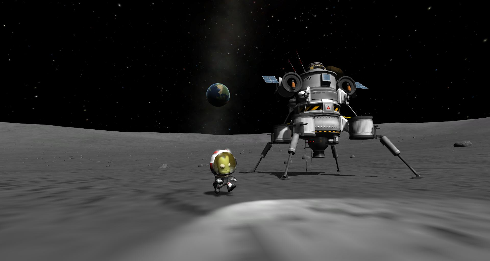
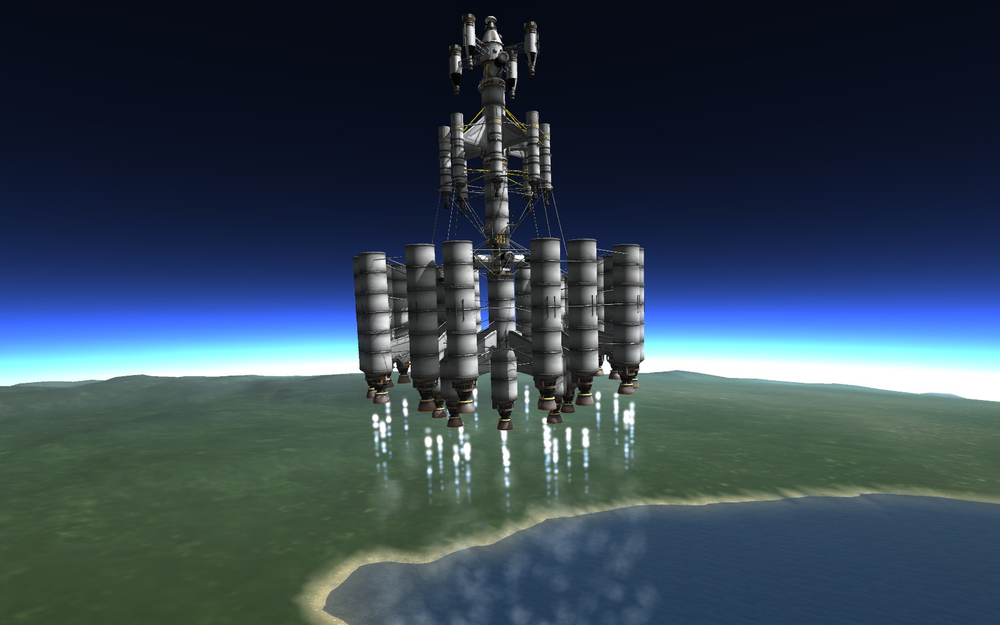
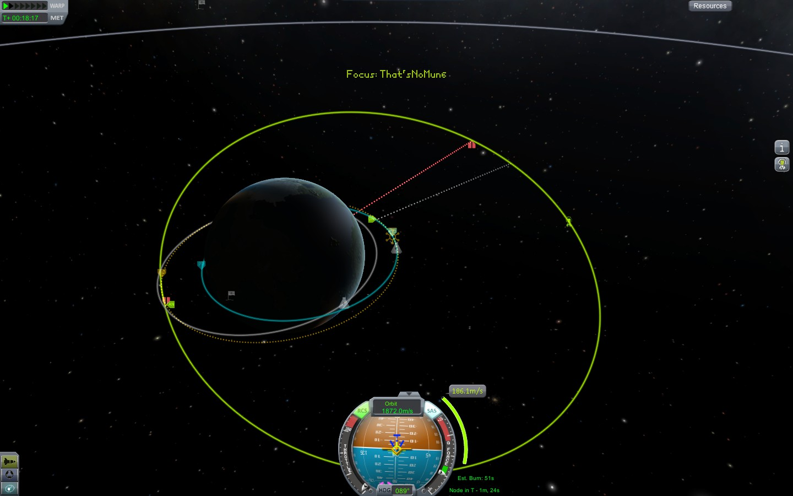
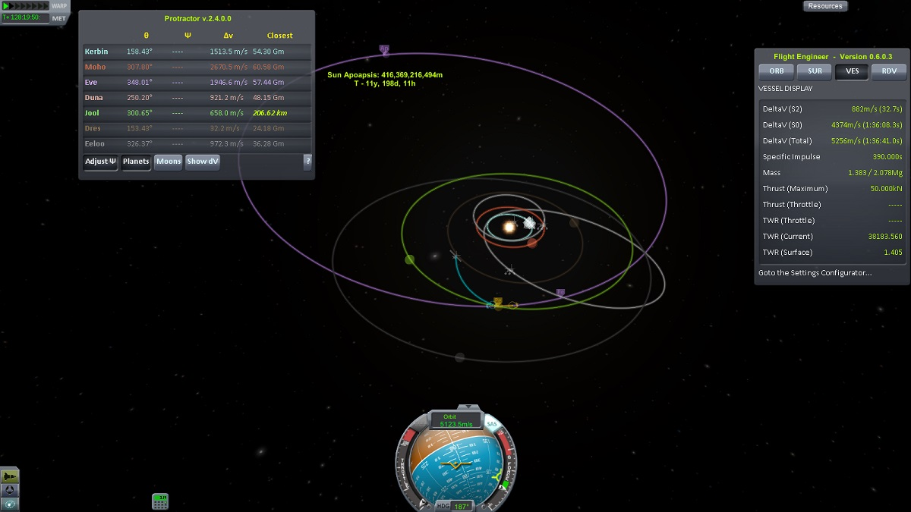
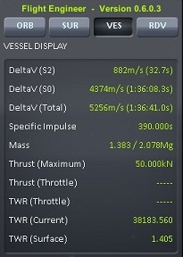
In Hamiltonian mechanics, the time evolution is obtained by computing the Hamiltonian of the system in the generalized coordinates and inserting it in the Hamiltonian equations. It is important to point out that this approach is equivalent to the one used in Lagrangian mechanics. In fact, as will be shown below, the Hamiltonian is the Legendre transform of the Lagrangian, and thus both approaches give the same equations for the same generalized momentum. The main motivation to use Hamiltonian mechanics instead of Lagrangian mechanics comes from the symplectic structure of Hamiltonian systems.
Wikipedia
Lagrangian mechanics is a re-formulation of classical mechanics using the principle of stationary action (also called the principle of least action). Lagrangian mechanics applies to systems whether or not they conserve energy or momentum, and it provides conditions under which energy, momentum or both are conserved.
[…]
The fundamental lemma of the calculus of variations shows that solving the Lagrange equations is equivalent to finding the path for which the action functional is stationary, a quantity that is the integral of the Lagrangian over time.
Wikipedia
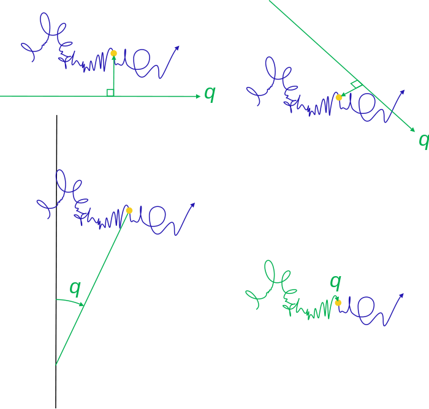
MathBox
“I don’t see how it’s doing society any good
to have its members walking around with
vague memories of algebraic formulas and geometric diagrams, and clear memories of hating them.”
Paul Lockhart, “A Mathematician's Lament”
→
$$ y = 0.5 - 0.5 \cdot \cos x $$
$$ r = 0.5 - 0.5 \cdot \cos \theta $$
$$ r = 0.5 + 0.5 \cdot \cos 8 \theta $$
$$ \begin{array}{rl}
r = & \arcsin(0.5 + 0.5 \cos 8 \theta) \\
& ( 0.5 + 0.5 \cos \theta) \\
\end{array} $$
$$ \frac{\partial \mathbf{v}}{\partial t} + \mathbf{v} \cdot \nabla \mathbf{v} = -\frac{1}{\rho} \nabla p + \nu \nabla^2 \mathbf{v} + \mathbf{f} $$
→
$$
y = \frac{x+1}{x-3} \frac{1}{x} \frac{1}{x+2}
$$
→
Math Machines
Bezier Curves


Paul de Casteljau
1959

Pierre Bézier

1962
Vectors
$$ \class{mj-blue}{\vec a} $$
$$ \class{mj-blue}{\vec a} , \class{mj-red}{\vec b} $$
$$ \class{mj-blue}{\vec a} = \class{mj-red}{\vec b} $$
$$ \class{mj-blue}{\vec a} \neq \class{mj-red}{\vec b} $$
$$ \class{mj-blue}{\vec a} + \class{mj-red}{\vec b} = \class{mj-green}{\vec c} $$
$$ \class{mj-green}{\vec c} - \class{mj-red}{\vec b} = \class{mj-blue}{\vec a} $$
$$ \class{mj-blue}{\vec a} + \class{mj-blue}{\vec a} + \class{mj-blue}{\vec a} = 3 \cdot \class{mj-blue}{\vec a} = \class{mj-green}{\vec b} $$
$$ \class{mj-blue}{\vec a} = \frac{\class{mj-green}{\vec b}}{3} = \frac{1}{3} \cdot \class{mj-green}{\vec b} $$
$$ \class{mj-red}{\vec b} - \class{mj-blue}{\vec a} = \class{mj-green}{\vec c} $$
$$ \class{mj-purple}{\vec d} = \class{mj-blue}{\vec a} + \frac{1}{3} \cdot (\class{mj-red}{\vec b} - \class{mj-blue}{\vec a}) $$
Linear interpolation
$$ lerp({\vec a}, {\vec b}, t) = \vec a + t \cdot (\vec b - \vec a) $$Quadratic Bezier Curve

Cubic Bezier Curve

Bicubic Bezier Surface


Matrices
Affine Transforms
Parallel Lines
Vector Basis
Disassemble and Reassemble
Matrix
$$
\begin{bmatrix}
\class{mj-blue}{0.53} & \class{mj-green}{0.42} \\
\class{mj-blue}{-0.32} & \class{mj-green}{0.77}
\end{bmatrix}
$$
Matrix-Vector Multiply
$$
\class{mj-purple}{\vec v'} = \mathbf{M} \cdot \class{mj-orangered}{\vec v}
$$
$$ \begin{bmatrix} \class{mj-purple}{x'} \\ \class{mj-purple}{y'} \end{bmatrix} = \begin{bmatrix} \class{mj-blue}{0.53} & \class{mj-green}{0.42} \\ \class{mj-blue}{-0.32} & \class{mj-green}{0.77} \end{bmatrix} \cdot \begin{bmatrix} \class{mj-orangered}{x} \\ \class{mj-orangered}{y} \end{bmatrix} $$
$$ \begin{bmatrix} \class{mj-purple}{x'} \\ \class{mj-purple}{y'} \end{bmatrix} = \begin{bmatrix} \class{mj-blue}{0.53} & \class{mj-green}{0.42} \\ \class{mj-blue}{-0.32} & \class{mj-green}{0.77} \end{bmatrix} \cdot \begin{bmatrix} \class{mj-orangered}{x} \\ \class{mj-orangered}{y} \end{bmatrix} $$
Disassemble and Reassemble
$$
\class{mj-purple}{\vec v'} = \mathbf{M} \cdot \class{mj-orangered}{\vec v}
$$
$$ \begin{bmatrix} \class{mj-purple}{x'} \\ \class{mj-purple}{y'} \end{bmatrix} = \class{mj-orangered}{x} \cdot \begin{bmatrix} \class{mj-blue}{0.53} \\ \class{mj-blue}{-0.32} \end{bmatrix} + \class{mj-orangered}{y} \cdot \begin{bmatrix} \class{mj-green}{0.42} \\ \class{mj-green}{0.77} \end{bmatrix} $$
$$ \begin{bmatrix} \class{mj-purple}{x'} \\ \class{mj-purple}{y'} \end{bmatrix} = \class{mj-orangered}{x} \cdot \begin{bmatrix} \class{mj-blue}{0.53} \\ \class{mj-blue}{-0.32} \end{bmatrix} + \class{mj-orangered}{y} \cdot \begin{bmatrix} \class{mj-green}{0.42} \\ \class{mj-green}{0.77} \end{bmatrix} $$
Matrix-Matrix Multiply
$$
\class{mj-purple}{\vec v'} = \mathbf{M'} \cdot \class{mj-orangered}{\vec v} = \mathbf{R} \cdot \mathbf{M} \cdot \class{mj-orangered}{\vec v}
$$
$$ \begin{bmatrix} \class{mj-purple}{x'} \\ \class{mj-purple}{y'} \end{bmatrix} = \begin{bmatrix} \class{mj-blue}{-0.32} & \class{mj-green}{0.77} \\ \class{mj-blue}{-0.53} & \class{mj-green}{-0.42} \end{bmatrix} \begin{bmatrix} \class{mj-orangered}{x} \\ \class{mj-orangered}{y} \end{bmatrix} $$
$$ = \begin{bmatrix} \class{mj-blue}{0} & \class{mj-green}{1} \\ \class{mj-blue}{-1} & \class{mj-green}{0} \end{bmatrix} \begin{bmatrix} \class{mj-blue}{0.53} & \class{mj-green}{0.42} \\ \class{mj-blue}{-0.32} & \class{mj-green}{0.77} \end{bmatrix} \begin{bmatrix} \class{mj-orangered}{x} \\ \class{mj-orangered}{y} \end{bmatrix} $$
$$ \begin{bmatrix} \class{mj-purple}{x'} \\ \class{mj-purple}{y'} \end{bmatrix} = \begin{bmatrix} \class{mj-blue}{-0.32} & \class{mj-green}{0.77} \\ \class{mj-blue}{-0.53} & \class{mj-green}{-0.42} \end{bmatrix} \begin{bmatrix} \class{mj-orangered}{x} \\ \class{mj-orangered}{y} \end{bmatrix} $$
$$ = \begin{bmatrix} \class{mj-blue}{0} & \class{mj-green}{1} \\ \class{mj-blue}{-1} & \class{mj-green}{0} \end{bmatrix} \begin{bmatrix} \class{mj-blue}{0.53} & \class{mj-green}{0.42} \\ \class{mj-blue}{-0.32} & \class{mj-green}{0.77} \end{bmatrix} \begin{bmatrix} \class{mj-orangered}{x} \\ \class{mj-orangered}{y} \end{bmatrix} $$
3D
$$
\class{mj-purple}{\vec v'} = \mathbf{M} \cdot \class{mj-orangered}{\vec v}
$$
$$ \begin{bmatrix} \class{mj-purple}{x'} \\ \class{mj-purple}{y'} \\ \class{mj-purple}{z'} \end{bmatrix} = \begin{bmatrix} \class{mj-blue}{a} & \class{mj-green}{d} & \class{mj-red}{g} \\ \class{mj-blue}{b} & \class{mj-green}{e} & \class{mj-red}{h} \\ \class{mj-blue}{c} & \class{mj-green}{f} & \class{mj-red}{i} \end{bmatrix} \begin{bmatrix} \class{mj-orangered}{x} \\ \class{mj-orangered}{y} \\ \class{mj-orangered}{z} \end{bmatrix} $$
$$ \begin{bmatrix} \class{mj-purple}{x'} \\ \class{mj-purple}{y'} \\ \class{mj-purple}{z'} \end{bmatrix} = \begin{bmatrix} \class{mj-blue}{a} & \class{mj-green}{d} & \class{mj-red}{g} \\ \class{mj-blue}{b} & \class{mj-green}{e} & \class{mj-red}{h} \\ \class{mj-blue}{c} & \class{mj-green}{f} & \class{mj-red}{i} \end{bmatrix} \begin{bmatrix} \class{mj-orangered}{x} \\ \class{mj-orangered}{y} \\ \class{mj-orangered}{z} \end{bmatrix} $$
4D?
$$
\class{mj-purple}{\vec v'} = \mathbf{M} \cdot \class{mj-orangered}{\vec v}
$$
$$ \begin{bmatrix} \class{mj-purple}{x'} \\ \class{mj-purple}{y'} \\ \class{mj-purple}{z'} \\ \class{mj-purple}{w'} \end{bmatrix} = \begin{bmatrix} \class{mj-blue}{a} & \class{mj-green}{e} & \class{mj-red}{i} & \class{mj-indigo}{m} \\ \class{mj-blue}{b} & \class{mj-green}{f} & \class{mj-red}{j} & \class{mj-indigo}{n} \\ \class{mj-blue}{c} & \class{mj-green}{g} & \class{mj-red}{k} & \class{mj-indigo}{o} \\ \class{mj-blue}{d} & \class{mj-green}{h} & \class{mj-red}{l} & \class{mj-indigo}{p} \end{bmatrix} \begin{bmatrix} \class{mj-orangered}{x} \\ \class{mj-orangered}{y} \\ \class{mj-orangered}{z} \\ \class{mj-orangered}{w} \end{bmatrix} $$
$$ \begin{bmatrix} \class{mj-purple}{x'} \\ \class{mj-purple}{y'} \\ \class{mj-purple}{z'} \\ \class{mj-purple}{w'} \end{bmatrix} = \begin{bmatrix} \class{mj-blue}{a} & \class{mj-green}{e} & \class{mj-red}{i} & \class{mj-indigo}{m} \\ \class{mj-blue}{b} & \class{mj-green}{f} & \class{mj-red}{j} & \class{mj-indigo}{n} \\ \class{mj-blue}{c} & \class{mj-green}{g} & \class{mj-red}{k} & \class{mj-indigo}{o} \\ \class{mj-blue}{d} & \class{mj-green}{h} & \class{mj-red}{l} & \class{mj-indigo}{p} \end{bmatrix} \begin{bmatrix} \class{mj-orangered}{x} \\ \class{mj-orangered}{y} \\ \class{mj-orangered}{z} \\ \class{mj-orangered}{w} \end{bmatrix} $$
Ordinary 2D Space
Projective 2D Space
Z Vector = Translation + Scale
X/Y Vector = Perspective
Projective 3D Transform = 3D XYZ Matrix + Translation + Perspective
$$ \begin{bmatrix} \class{mj-blue}{a} & \class{mj-green}{e} & \class{mj-red}{i} & \class{mj-indigo}{m} \\ \class{mj-blue}{b} & \class{mj-green}{f} & \class{mj-red}{j} & \class{mj-indigo}{n} \\ \class{mj-blue}{c} & \class{mj-green}{g} & \class{mj-red}{k} & \class{mj-indigo}{o} \\ \class{mj-orangered}{d} & \class{mj-orangered}{h} & \class{mj-orangered}{l} & 1 \end{bmatrix} $$
Object Space to World Space
World Space to View Space
View Space to Screen Space
Or Back Again
Procedural Generation
Iñigo Quílez, Pixar
“To make a film, we have to direct
almost 200 billion pixels.
That's a lot of mathematics.”

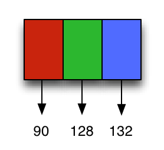

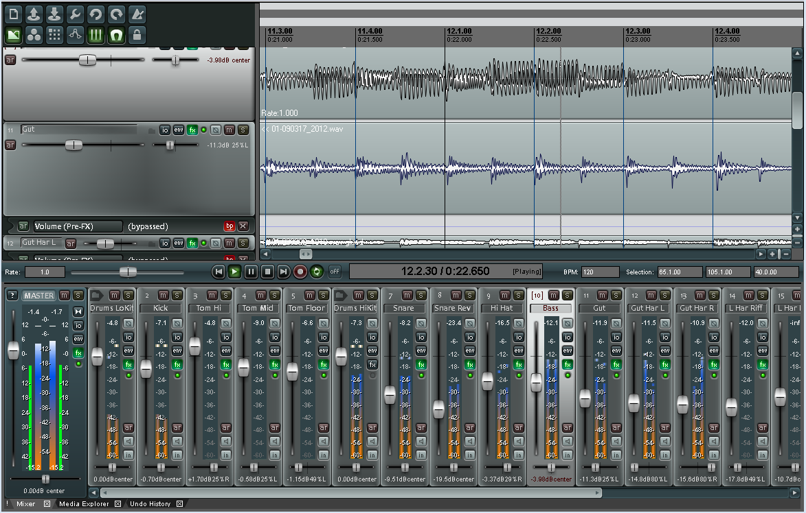


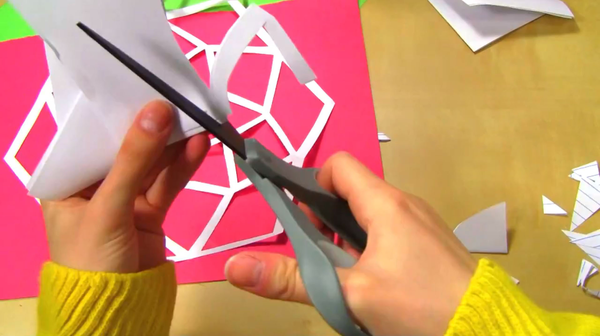
“Doodling in Math Class” — Vihart
YouTube.com / user / Vihart
→
→
Longitude
Latitude
longitude = cos(time + sin(time * 0.31)) * 2 + sin(time * 0.83) * 3 + time * 0.02 latitude = sin(time * 0.7 + 1) - cos(3 + time * 0.43 + sin(time) * 0.13) * 2.3

$$ x $$
$$ x =\hspace{3 pt}? $$
$$ x = $$
$$ \ldots $$
$$ -4 $$
$$ -3 $$
$$ -2 $$
$$ -1 $$
$$ 0 $$
$$ 1 $$
$$ 2 $$
$$ 3 $$
$$ 4 $$
$$ \ldots $$
$$ f(x) = x $$
$$ f(x) = 1 $$
$$ f(x) = 2x $$
$$ f(x) = 2x + 1 $$
$$ f(x) = \left|2x + 1\right| $$
$$ f(x) = \left| 2x + 1 \right| - 4 $$
$$ f(x) = \left| \left| 2x + 1 \right| - 4 \right| $$
$$ f(x) = \left| \left| 2x + 1 \right| - 4 \right| - 2.5 $$
$$ f(x) = \left| \left| \left| 2x + 1 \right| - 4 \right| - 2.5 \right| $$
$$ \class{mj-blue}{f(x) = 2.5 \cdot \arctan x} $$
$$
\class{mj-green}{g(x) = x}
$$
$$ \class{mj-blue}{f(x) = 2.5 \cdot \arctan x} $$
$$ \class{mj-green}{g(x) = \sin 6x} $$
$$ \class{mj-red}{f(x) + g(x)} $$
$$
\class{mj-blue}{ f(x) = 0.5 + 0.5 \cdot \cos x }
$$
$$
\class{mj-blue}{ f(x) = 0.5 + 0.5 \cdot \cos ( max(-\pi, min(\pi, x))) }
$$
$$
\class{mj-blue}{ f(x) = 0.5 + 0.5 \cdot \cos ( max(-\pi, min(\pi, x))) } $$
$$
\class{mj-green}{ g(x) = thing(x, t) }
$$
$$
\class{mj-blue}{ f(x) = 0.5 + 0.5 \cdot \cos ( max(-\pi, min(\pi, x))) } $$
$$
\class{mj-red}{ g(x) = f(x) \cdot thing(x, t) }
$$
Catmull Rom Spline
→
Stacked Value Noise

Direct Live Visualization
$$ z $$
$$ z^{0.5} $$
$$ (z^{0.5})^{4} = z^{2}$$
$$ z^{\sqrt{2}}$$
$$ z^p = \,? $$
Show, Don't Tell
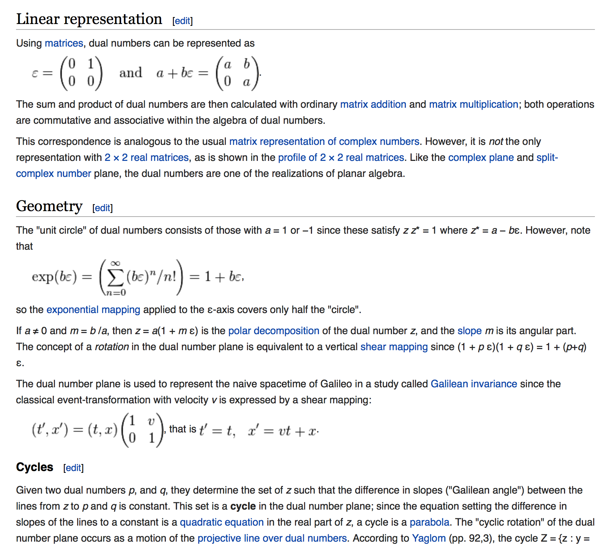
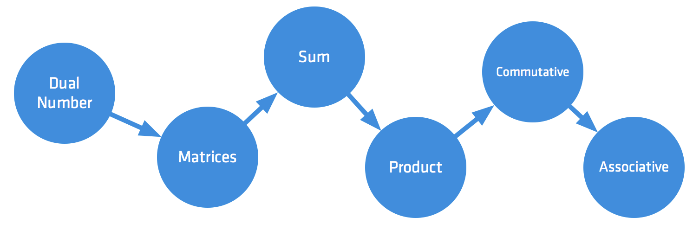
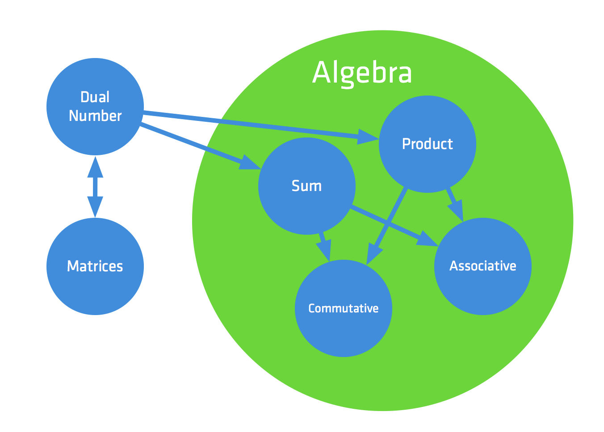
→
References
“Media for Thinking the Unthinkable”
Bret Victor
Worry Dream.com / MediaForThinkingTheUnthinkable
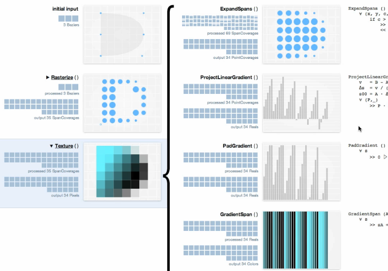
Red Blob Games - Amit Patel
Red Blob Games.com
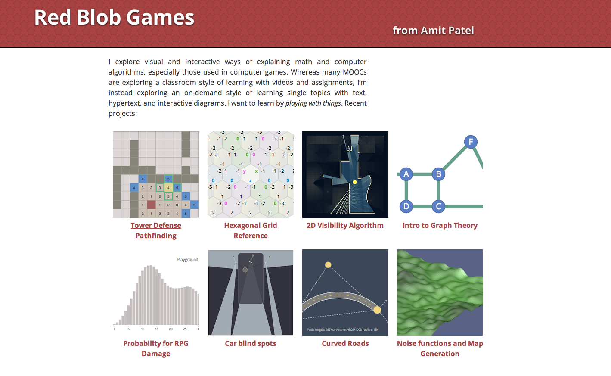
Syntopia — Mikael Hvidtfeldt Christensen
Blog.Hvidtfeldts.Net
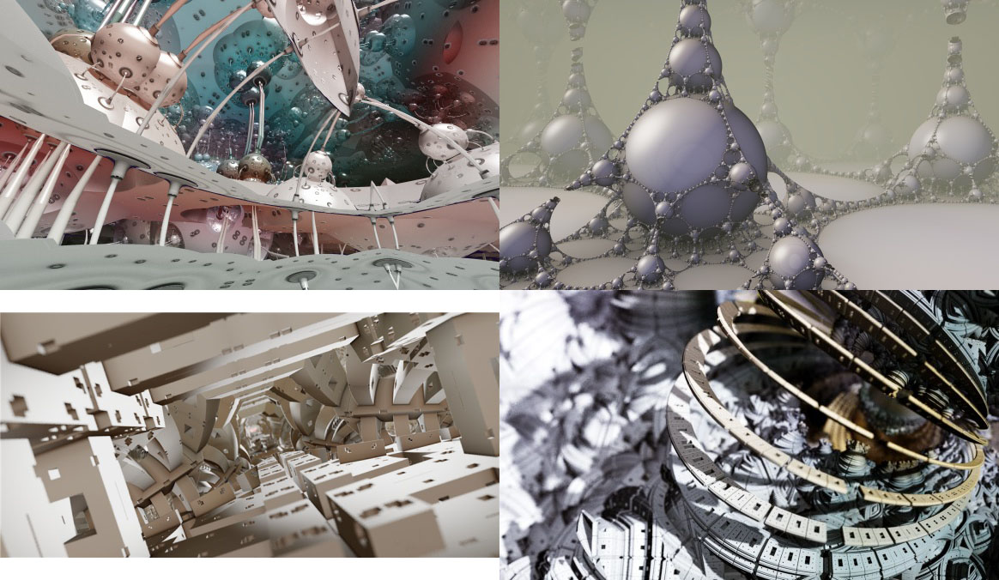
Thanks!
Acko.net – Slides @ http://bit.do/acko
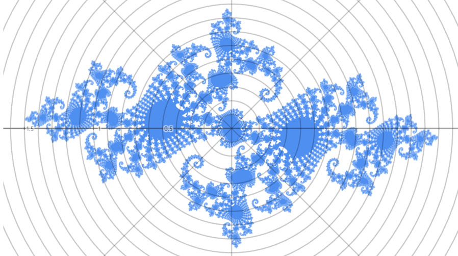
“How to Fold a Julia Fractal”
“How to Fold a Julia Fractal”
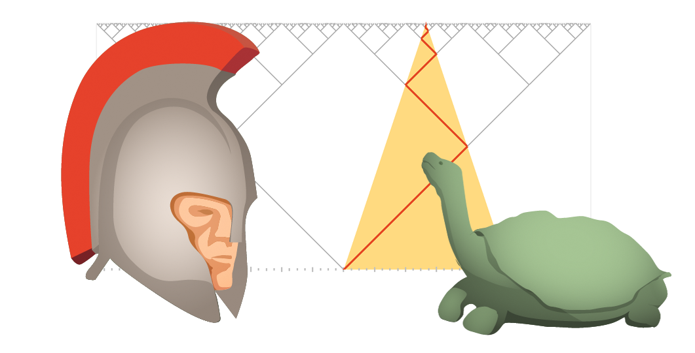
“To Infinity And Beyond”
“To Infinity And Beyond”
Powered by MathBox.js and Three.js